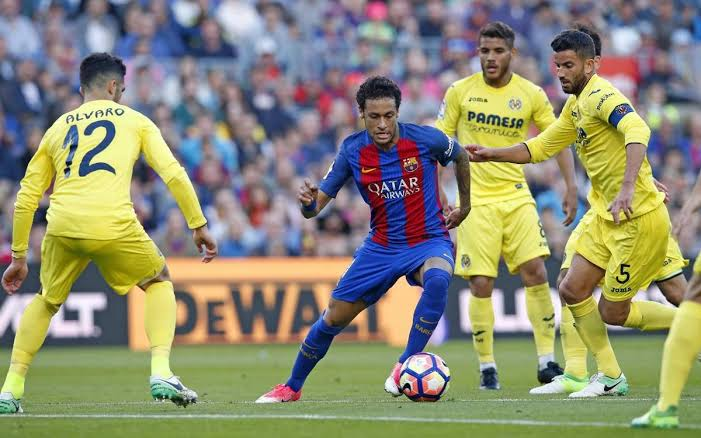
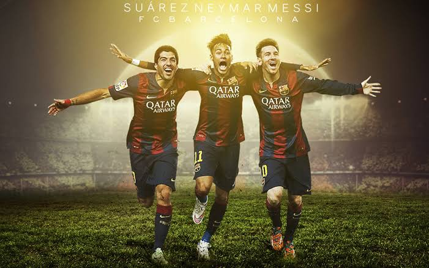

Historia
El fútbol moderno nació en Inglaterra en el世紀 XIX, con reglas establecidas por la FIFA en 1904. Es el deporte más popular del mundo.

|
Beneficios
Mejora la condición física, fomenta el trabajo en equipo y desarrolla habilidades como la coordinación y la estrategia.

|
|